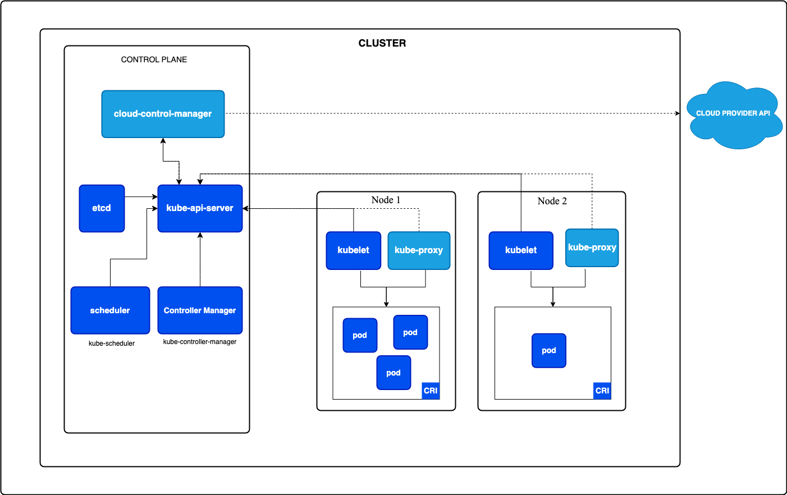

Kubernetes
Kubernetes is an open source system used to deploy, scale and manage containerised applications anywhere.
It is great for the following reasons:
- It abstracts away infrastruture, as it handles compute/network/storage on behalf of your workloads.
- It has built in service health monitoring, restarting containers if they are unhealthy or fail, making sure you have high availability.
- It has built in commands to do a lot of heavy lifting that goes into application management, using
kubectl.
Components of Kubernetes

Cluster
This is what all your kubernetes parts run in.
Namespaces
Namespaces conceptually compartmentalise your resources into virtual clusters, that way you can allocate a set amount of resources to each namespace. For example, if you create a namespace for each department in your company, you can limit the amount of CPU/RAM that namespace has to distribute amongst the components inside it.
Once you have a namespace, you can go ahead and add resources to it, such as variables using configMaps and secrets, or RAM/CPU set up from the resource part of the deployment manifest (the deployment.yaml).
Creating a namespace
kubectl create namespace <namespace name>
Get all namespaces
kubectl get ns
ConfigMaps
ConfigMaps are objects used to store non-confidential variables as key : value pairs, pods can consume ConfigMaps as env variables/ comand line args or as config files in a volume. The advantage of ConfigMaps is that it allows you to decouple environment specific configurations from your application, making them easily portable and adjustable.
Creating ConfigMaps from kubectl
kubectl -n <namespace name> create configmap <configmap name> --from-literal ENV_VAR_NAME=value
list out configmaps:
kubectl -n <namespace name> get cm
Output configmaps as yaml
kubectl -n <namespace name> get cm <configmap name> -o yaml
Secrets
Secrets are similar to configMaps except they are encrypted at rest. It is important to keep secrets separate from configMaps as you can apply rbac to give access to secrets to some people but not others.
Creating a secret from kubectl
kubectl -n <namespace name> create secret generic <secret name> \
--from-literal SECRET_KEY=secretValue \
--from-literal SECRET_KEY_2=secret_value_2
Setting secrets in deployment
Once you have created the secret, you can then pass the secret to your deployment yaml manifest like so:
spec:
containers:
- name: tpm-backend
image: tpm-backend:0.0.2
imagePullPolicy: Never
ports:
- containerPort: 80
env:
- name: SECRET_NAME_IN_CONTAINER
valueFrom:
secretKeyRef:
name: SECRET_NAME
key: SECRET_KEY
List all secrets
kubectl -n <namespace name> get secret
Deployments
We can use kubectl to apply our deployment manifest files. Deployment manifests are used to describe the specification of how we want to deploy our applications. e.g. what container, how much replicas we want, and the amount of resources we want to allocate to each deployment.
Example of deployment manifest yaml file:
apiVersion: apps/v1
kind: Deployment
metadata:
name: myapp
spec:
replicas: 3
selector:
matchLabels:
app: myapp
template:
metadata:
labels:
app: myapp
spec:
containers:
- name: mycontainer
image: myimage:tag
env:
- name: ENV_VARIABLE_FROM_CONFIGMAP
valueFrom:
configMapKeyRef:
name: myconfigmap
key: configKey
- name: ENV_VARIABLE_FROM_SECRET
valueFrom:
secretKeyRef:
name: mysecret
key: secretKey
ports:
- containerPort: 8080
protocol: TCP
resources:
requests:
memory: "256Mi"
cpu: "100m"
limits:
memory: "512Mi"
cpu: "500m"
Deploy yaml deployment manifest
kubectl -n <namespace name> apply -f <deployment.yaml file>
View deployed pods
Get all pod names:
kubectl -n <namespace name> get pods
get specific pod:
kubectl -n <namespace name> get pods/<pod name>
Services
Services are logical abstractions that provide stable endpoint to access our pods. Because pods are ephemeral, their IP addresses change when being spun up and down. Due to this, we cannot directly connect to them, as the connection will be unreliable, to counteract this issue, we use services, where we can use a stable IP address and port to point to specific pods via the app name defined in the service.
Pods running different applications can communicate with each other through services as long as each application is being exposed by a service.
Services are defined through a yaml manifest that can be applied.
Example of backend service:
apiVersion: v1
kind: Service
metadata:
name: tpm-backend
spec:
type: ClusterIP
selector:
app: tpm-backend
ports:
- protocol: TCP
port: 8080
targetPort: 8080
In the example above port is the port on which the service itself listens for traffic, while targetPort is the port to which traffic is forwarded to the backend pods, hence the targetPort needs to be the same port that the application's deployment yaml is exposing.
By default, the type of service is ClusterIP if no other type is set, this is an internal IP address that provides an IP address for other components within the cluster to connect to, but does not allow connection from anything external.
Apply service Yaml manifest
kubectl -n <namespace name> -f <path to service yaml file>
list all services in namespace
kubectl -n <namespace name> get svc
running the above command will give us information for each service, including the clusterIP we can access our deployment on, as well as the port it exposes.
Applications communicating through services internally
If you have two different deployments running different images and each deployment exposes a service, the pods managed by these deployments can communicate with each other using their internal Cluster IP addresses and exposed ports.
Here's how it works:
1.You have two Deployments, each deploying Pods running different container images.
2.Each Deployment exposes a Service, which creates a stable endpoint for accessing the Pods.
3.The Pods can communicate with each other using the DNS name of the Service, which resolves to the internal Cluster IP address of the Service. They can use the internal Cluster IP address and exposed ports to send and receive data.
Note that because services are logical abstractions, they can communicate across namespaces without any issues.
Ingress
Ingress exposes HTTP and HTTPS routes from outside the cluster to services within the cluster. Traffic routing is controlled by rules defined on the Ingress resource. You can define an ingress API object through a yaml file.
In an ingress API object you define the host that you expect traffic to be incoming from, and can define where you want to route that traffic, by defining which service you want to send it to, by giving it the name and port of the service.
Example of ingress file:
apiVersion: networking.k8s.io/v1
kind: Ingress
metadata:
name: tpm-backend-ingress
spec:
rules:
- host: "foo-bar.com" # //hostname for the application e.g. my website, need to map domain name to node IP address 4:45 on video
http:
paths:
- pathType: Prefix
path: "/tpm"
backend:
service:
name: tpm-backend
port:
number: 8080 # this points to the service port we are exposing
Defining and deploying an ingress resource is not enough, we need an ingress controller to actually run the ingress resource.
Ingress Controllers
Ingress controllers are used to run your ingress resource you have deployed through a yaml configuration. Controllers are not defaultly installed in your cluster, so you must install one manually, there are multiple resources to choose from, but we will keep it simple and use nginx.
deploy Nginx ingress controller through kubectl
The first thing is deploying your ingress controller to manage ingress as per your ingress manifest.
kubectl apply -f https://raw.githubusercontent.com/kubernetes/ingress-nginx/controller-v1.10.0/deploy/static/provider/cloud/deploy.yaml
The command above will create an nginx controller within its own namespace ingress-nginx.
The ingress controller normally goes into its own namespace to make it easier to manage its resources and also separate its own resources so it has the capability to manage its own traffic.
Even though the ingress controller is in its own namespace, by default it listens out for all the ingress resources deployed in our cluster across all namespaces.
Once you have an ingress controller deployed, you can then route external network traffic to the ingress controller by routing traffic from your DNS to the ingress controllers loadBalancer IP address.
Get LoadBalancer IP address of ingress controller.
This is the IP address you need to point external traffic to as an entry point to your cluster, i.e. you can set this IP address in the DNS settings of your cloudflare website. To find this IP address you can run the following command:
kubectl -n <ingress-controller-namespace> get svc
Note that this external IP address will be pending in the kind cluster, this is because LoadBalancer services are designed to use the load-balancer infrastructure your cloud provider offers, and since we aren't running in the cloud, there is none.
This also means that when you apply your ingress manifest, there will be no address assigned, as the loadBalancer's external IP address will be the one assigned to your ingress. Once you have an ingress controller running that exposes a public IP address, you use that IP address to route traffic, e.g. point the DNS record to the ingress controller's IP address when creating a DNS record on cloudflare.